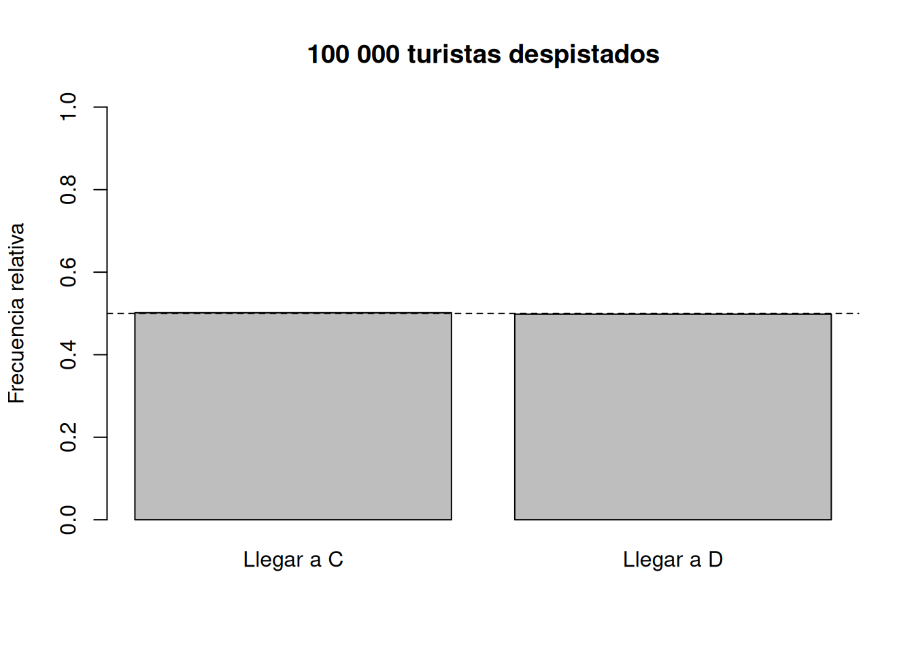

[1] "C"Misión probable: explorando el azar
La ciencia sí es cosa de chicas · Cátedra Europa 2026
Bienvenidas a la misión
Hoy vamos a convertirnos en investigadoras del azar. Nuestra tarea será hacer predicciones, experimentar, recoger evidencia y usarla para sacar conclusiones.
Pregunta de partida: Si algo ocurre al azar, ¿significa que no podemos decir nada sobre lo que ocurrirá?
Agradecimientos
Agradezco especialmente a la profesora Luz Adriana Mejía, del Departamento de Matemáticas de la Universidad del Norte, por la invitación a participar en el marco de Cátedra Europa 2026 y por hacer posible este espacio de La ciencia sí es cosa de chicas.
Estas actividades retoman y adaptan ideas del libro Azar y probabilidad (Editorial Síntesis), con un enfoque experimental para introducir conceptos fundamentales de probabilidad.
🔎 Nuestra Bitácora de Misión
Durante el taller construiremos una bitácora colectiva en Mentimeter. En algunos momentos registraremos allí nuestras hipótesis y observaciones para conocer lo que piensa todo el grupo y discutirlo juntas.
Regla de la misión: primero hacemos una predicción; después buscamos evidencia.
Bitácora 1 · Antes de comenzar
Mentimeter — Nube de palabras
Cuando escuchas la palabra azar, ¿qué palabra se te viene a la mente?
🔎 Bitácora de Misión
¡Únete a nuestra misión!
Escanea el código QR con tu celular y responde
la primera pregunta.
No cierres la página. Volveremos a nuestra Bitácora
durante las distintas misiones.
Misión 1 · Los papeles misteriosos
Tenemos una bolsa y dos papeles del mismo tamaño y material: uno marcado con 1 y otro con 2. Los introducimos en la bolsa, mezclamos y sacamos uno sin mirar. Después de observarlo, lo devolvemos a la bolsa y repetimos el experimento varias veces.
🔎 Registremos nuestra hipótesis
Mentimeter — Opción múltiple
Antes de sacar el papel, ¿cuál crees que saldrá?
- 1
- 2
Para conversar: si la mayoría eligió uno de los números, ¿eso hace que ese número sea más probable?
Experimentamos
Realicemos varias extracciones con reemplazo. Registremos en el tablero cuántas veces aparece cada número.
Preguntas para el grupo:
- ¿Podíamos saber con certeza qué papel iba a salir en cada extracción?
- ¿Cuáles eran todos los resultados posibles?
- ¿Había alguna razón para que un papel tuviera ventaja sobre el otro?
Cuando no podemos conocer de antemano el resultado particular, estamos ante un experimento aleatorio.
🔎 Bitácora 2 · Midiendo la posibilidad
Mentimeter — Opción múltiple
¿Qué probabilidad asignarías a sacar el papel marcado con 1?
- 0
- \(1/4\)
- \(1/2\)
- \(3/4\)
- 1
Si los dos papeles tienen las mismas condiciones, los dos resultados son equiprobables:
\[ P(1)=P(2)=\frac12. \]
La probabilidad toma valores entre 0 y 1: 0 corresponde a un suceso imposible y 1 a un suceso seguro.
Cambiemos el experimento
Ahora imaginemos que agregamos un tercer papel, marcado con 3.
Para discutir oralmente:
- ¿Cuál es ahora el conjunto de resultados posibles?
- ¿Cuál resultado es más probable?
- ¿Qué probabilidad asignarías a obtener 3? ¿Y a obtener 1 o 2?
Si los tres papeles están en las mismas condiciones,
\[ P(1)=P(2)=P(3)=\frac13. \]
Misión 2 · Un turista despistado
Barranquilla recibe visitantes de muchos lugares. Imaginemos ahora a un turista que se mueve por una ciudad con una línea de metro que tiene dos ramales:
C D
\ /
\ /
\ /
\ /
B
|
|
ADe los trenes que parten de A y pasan por B, la mitad van a C y la otra mitad a D, alternándose:
\[ C, D, C, D, C, D, \ldots \]
Cada tren lleva escrito su destino. Sin embargo, un turista despistado que quiere ir a D toma el primer tren que llega sin mirar la indicación.
🔎 Bitácora 3 · ¿Dónde terminará?
Mentimeter — Opción múltiple
Si repetimos esta situación muchas veces, ¿qué crees que ocurrirá?
- Llegará más veces a C.
- Llegará más veces a D.
- Llegará aproximadamente la misma cantidad de veces a C y D.
Una sola historia
Una única simulación decidirá el destino de nuestro turista.
Pregunta: ¿el resultado de este único turista demuestra que ese destino era más probable?
¿Y si fueran 100 000 turistas?
Hacer físicamente el experimento 100 000 veces sería poco práctico. Una computadora puede repetirlo por nosotras.
¿Podemos repetir el experimento 100 000 veces?
Hacerlo manualmente sería muy lento.
¿Y si le pedimos a R que lo haga por nosotras?
R es un lenguaje de programación utilizado en estadística y ciencia de datos.
set.seed(123)
n <- 100000
elecciones <- sample(
c("C", "D"),
size = n,
replace = TRUE
)
prob_C <- mean(elecciones == "C")
prob_D <- mean(elecciones == "D")
barplot(
height = c(prob_C, prob_D),
names.arg = c("Llegar a C", "Llegar a D"),
ylim = c(0, 1),
main = "100 000 turistas despistados",
ylab = "Frecuencia relativa"
)
abline(h = 0.5, lty = 2)
Antes de explicar el gráfico:
- ¿Qué observan?
- ¿Qué les llama la atención?
- ¿Coincide con nuestra predicción?
- ¿Por qué las barras no tienen que ser exactamente iguales?
Como los dos destinos están en las mismas condiciones,
\[ P(C)=P(D)=\frac12, \qquad P(C)+P(D)=1. \]
Al conjunto de todos los resultados posibles lo llamamos espacio muestral. En esta misión,
\[ E=\{C,D\}. \]
🔎 Bitácora 4 · De la probabilidad a una predicción
Mentimeter — Respuesta numérica
Si 100 turistas hicieran lo mismo, ¿aproximadamente cuántos esperarías que llegaran a C?
Después de socializar las respuestas, discutir la diferencia entre esperar aproximadamente 50 y afirmar que exactamente 50 tienen que llegar a C.
Misión 3 · Laboratorio virtual de dados
Necesitamos un dado, pero esta vez nuestro laboratorio será virtual.
🔎 Bitácora 5 · Antes de lanzar
Mentimeter — Opción múltiple
¿Qué número crees que saldrá en el próximo lanzamiento?
- 1
- 2
- 3
- 4
- 5
- 6
Para conversar: ¿elegir un número es lo mismo que afirmar que ese número es más probable?
Experimentamos juntas
Realicemos varios lanzamientos con el dado virtual. Podemos registrar los resultados en el tablero y comparar lo que ocurre en pequeños grupos con lo que ocurre al juntar todos los lanzamientos.
El espacio muestral es
\[ E=\{1,2,3,4,5,6\}. \]
Todos los resultados tienen, para un dado equilibrado,
\[ P(1)=P(2)=\cdots=P(6)=\frac16. \]
De resultados a sucesos
Un suceso puede contener varios resultados. Por ejemplo,
\[ A=\{\text{obtener un número par}\}=\{2,4,6\}. \]
Para resolver oralmente:
\[ B=\{\text{número impar}\},\qquad C=\{\text{número primo}\},\qquad F=\{\text{múltiplo de 3}\}. \]
🔎 Bitácora 6 · Descubramos la regla
Mentimeter — Opción múltiple
¿Cuál es la probabilidad de obtener un número par?
- \(1/6\)
- \(2/6\)
- \(3/6\)
- \(4/6\)
- \(5/6\)
Tenemos 6 resultados posibles y 3 de ellos hacen que ocurra el suceso \(A\):
\[ P(A)=\frac{3}{6}=\frac12. \]
Cuando todos los resultados elementales son igualmente probables,
\[ \boxed{P(A)=\frac{\text{número de resultados favorables}}{\text{número de resultados posibles}}}. \]
Atención: esta regla depende de que los resultados sean equiprobables.
Misión 4 · ¿Es justo este dado?
Hasta ahora hemos supuesto que nuestro dado está equilibrado. Pero imaginemos algo diferente.
🎲 Experimento mental: tomamos un dado real y pegamos un botón grande y pesado sobre una de sus caras.
🔎 Bitácora 7 · El botón misterioso
Mentimeter — Opción múltiple
¿Siguen siendo igualmente probables los seis resultados?
- Sí.
- No.
- No estoy segura.
Para discutir: siguen existiendo seis resultados posibles, pero ¿basta con contarlos para afirmar que cada uno tiene probabilidad \(1/6\)?
¿Cómo investigaríamos el dado modificado?
🔎 Bitácora 8 · Diseñemos un experimento
Mentimeter — Respuesta abierta
Si no conocemos las probabilidades del dado modificado, ¿cómo podríamos estimarlas?
Socialicemos algunas propuestas. Una estrategia científica es repetir muchas veces el experimento, registrar los resultados y estudiar sus frecuencias relativas.
Si un resultado \(A\) aparece \(n_A\) veces en \(n\) repeticiones, calculamos
\[ \text{frecuencia relativa de }A=\frac{n_A}{n}. \]
Al aumentar el número de repeticiones, estas frecuencias pueden ayudarnos a aproximar las probabilidades desconocidas.
🏁 Misión cumplida
Hoy seguimos un proceso que aparece una y otra vez en la ciencia:
\[ \boxed{\text{preguntar}\;\longrightarrow\;\text{predecir}\;\longrightarrow\;\text{experimentar}\;\longrightarrow\;\text{analizar}\;\longrightarrow\;\text{concluir}} \]
Descubrimos que azar no significa que no podamos saber nada. Aunque no podamos anticipar con certeza cada resultado individual, la probabilidad nos permite estudiar patrones y razonar frente a la incertidumbre.
🔎 Bitácora 9 · Volvamos al comienzo
Mentimeter — Nube de palabras
Después de nuestras misiones, ¿con qué palabra relacionas ahora el azar?
Comparemos esta nube con la primera.
La ciencia sí es cosa de chicas
Hoy ustedes hicieron ciencia: formularon hipótesis, experimentaron, utilizaron herramientas digitales, analizaron datos y defendieron conclusiones.
Misión probable: explorando el azar
Cátedra Europa 2026